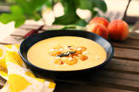

Őszibarack krémleves
A lédús barack, a könnyű joghurt és a menta önmagában is fenséges nyári frissítő, de leturmixolva nagyon gyorsan csodás levest készíthetünk belőlük.

Elő- és elkészítési idő
15 + 5 perc
Nehézségi szint
egyszerű
Költség
$$
Mennyiség
4 főre
Kalória
~350 kcal
Hozzávalók
- 1 kg őszibarack
- 5 dl joghurt
- 2 dl tejszín
- fél citrom leve
- menta a tálaláshoz
Elkészítés
- Mossuk meg, pucoljuk meg, és magozzuk ki a barackot.
- Tegyük egy nagy tálba, és alaposan turmixoljuk össze a joghurttal és a fél citrom levével együtt.
- Adjuk hozzá a tejszínt, és fakanállal keverjük egyenletesre.
- Tálaljuk friss mentával.